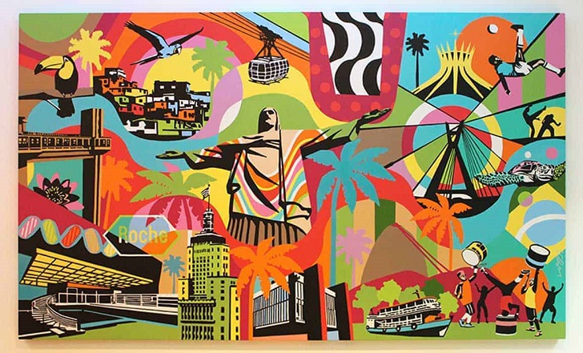

Arte
A arte brasileira é rica e diversificada, refletindo a história e a diversidade cultural do país. Desde as expressões artísticas indígenas até as influências trazidas pelos colonizadores europeus, africanos e imigrantes de diferentes partes do mundo, a arte brasileira é uma fusão de culturas e estilos. Ela abrange diversas formas de expressão, como pintura, escultura, música, dança, teatro, literatura e cinema. A arte brasileira reflete a identidade nacional, retratando paisagens exuberantes, questões sociais, tradições culturais e a diversidade étnica do país. Ela também se destaca pela criatividade, originalidade e pela capacidade de se reinventar ao longo do tempo, criando obras que dialogam com o passado, o presente e o futuro do Brasil.

A seguir alguns dos principais pontos artísticos brasileiros:
Museu de Arte de São Paulo (MASP) - Localizado em São Paulo, é um dos principais museus de arte do país, abrigando uma vasta coleção de arte ocidental, com obras de artistas renomados como Van Gogh, Picasso e Portinari.
Museu Nacional de Belas Artes (MNBA) - Situado no Rio de Janeiro, o MNBA é um importante museu de arte brasileira e internacional. Possui uma extensa coleção de pinturas, esculturas e desenhos de diversos períodos, incluindo obras de artistas como Di Cavalcanti e Candido Portinari.
Instituto Inhotim - Localizado em Brumadinho, Minas Gerais, é considerado um dos maiores complexos de arte contemporânea a céu aberto do mundo. Abriga uma impressionante coleção de obras de arte moderna e contemporânea, além de um jardim botânico com uma variedade de espécies vegetais.
Instituto Ricardo Brennand - Localizado em Recife, Pernambuco, é um complexo cultural que abriga um museu de arte, um castelo medieval e belos jardins. Apresenta uma coleção de arte europeia e brasileira, além de armas antigas e artefatos históricos.